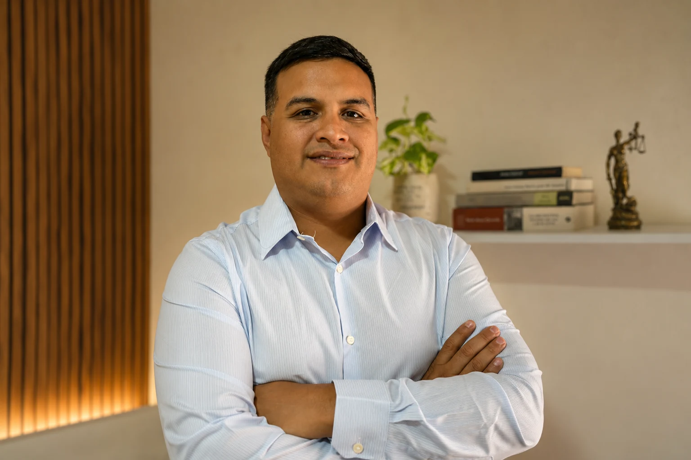
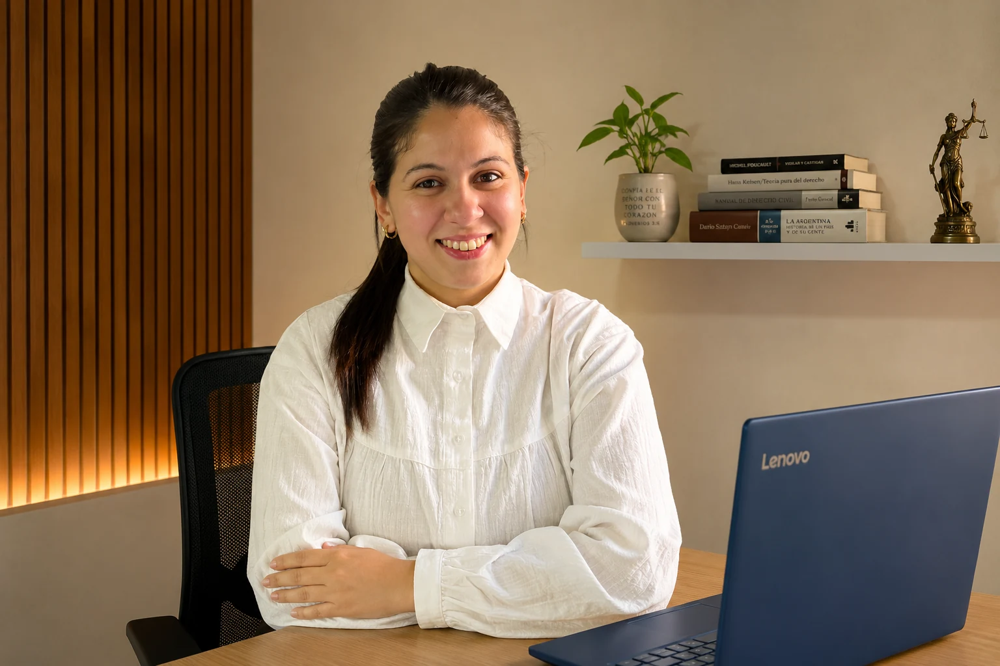

Derecho de Familia
Divorcios, alimentos, cuidado personal, régimen de comunicación y responsabilidad parental.
Asesoramiento jurídico
Acompañamos a personas, familias y empresas con un asesoramiento cercano, profesional y transparente para ayudarte a tomar decisiones con mayor seguridad.
Nuestros servicios
Analizamos cada situación, ordenamos la documentación y diseñamos una estrategia jurídica concreta.
Divorcios, alimentos, cuidado personal, régimen de comunicación y responsabilidad parental.
Declaratorias de herederos, inscripciones, tracto abreviado y planificación sucesoria.
Asesoramiento previsional, moratorias ANSES, pensiones y beneficios.
Despidos, diferencias salariales, registración laboral y reclamos derivados del vínculo de trabajo.
Asesoramiento ante accidentes de trabajo, enfermedades profesionales y reclamos frente a la ART.
Sociedades, IGJ, DPPJ, asociaciones civiles, fundaciones y reorganizaciones.
Registro, seguimiento y protección de marcas ante el INPI.
Liquidación de sueldos y jornales para empresas, con más de diez años de experiencia.
Conocé al equipo
Experiencia jurídica, comunicación clara y un trato cercano en cada etapa.

Especializado en Derecho de Familia, Sucesiones y Jubilaciones.
“Un buen asesoramiento comienza por escuchar y comprender la situación de cada persona.”

Especializada en Derecho Societario, Registro de Marcas, Derecho Laboral y Asesoramiento Empresarial. Además, cuenta con más de diez años de experiencia en liquidación de sueldos y jornales.
“Trabajamos para que cada decisión jurídica pueda tomarse con claridad y seguridad.”
Reseñas de Google
Conocé las opiniones publicadas por personas que confiaron en CyS Estudio Jurídico.
Las opiniones se consultan directamente en nuestra ficha de Google Maps.
Nuestra forma de trabajar
Cómo trabajamos
Recibimos tu consulta y comprendemos qué necesitás resolver.
Revisamos los antecedentes y la documentación disponible.
Te explicamos los caminos posibles y los próximos pasos.
Trabajamos con seguimiento y comunicación durante el proceso.
Preguntas frecuentes
Sí. Atendemos consultas virtuales y también presenciales con cita previa.
Berazategui, Quilmes, Provincia de Buenos Aires y Ciudad Autónoma de Buenos Aires. También recibimos consultas online.
Sí. Podés compartir la documentación inicial para que podamos comprender mejor tu situación.
Podés escribirnos por WhatsApp, correo electrónico o Instagram. Coordinaremos la modalidad y el horario.
No. Primero analizamos el caso y luego te informamos las alternativas posibles, sus alcances y los pasos a seguir.
Contacto
Contanos brevemente tu situación y coordinaremos la modalidad y el horario de atención.
Solicitar una entrevista